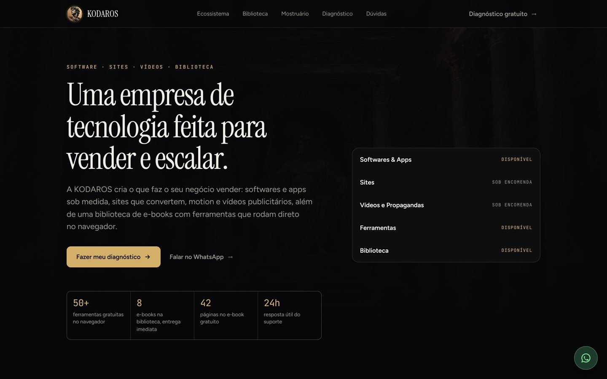
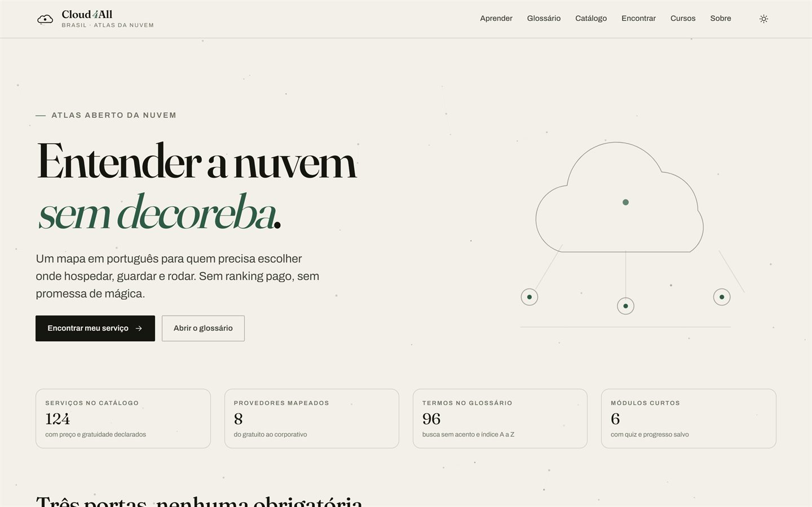

KODAROS
Ecossistema de produtos e serviços: e-books, ferramentas gratuitas, software desktop e sites.
Cada linha é um repositório público, com a descrição do próprio repositório, a linguagem, o tamanho no disco e os links.

Ecossistema de produtos e serviços: e-books, ferramentas gratuitas, software desktop e sites.
Curadoria de ofertas com filtros, wishlist e SEO, roda inteira no navegador.

Atlas aberto da nuvem: catálogo, glossário, recomendador com trilha visível e cursos oficiais.
O selo no ar marca página publicada; o selo caso abre o estudo completo.
Sessões práticas para você sair com um workflow de agentes rodando no seu projeto: escolher a ferramenta certa, montar o fluxo e revisar o que o agente entrega.
Sessões online e individuais para devs, estudantes e times pequenos: cada encontro termina com algo rodando no seu projeto. Também estou aberto a oportunidades em IA e agentes, dados, backend, cibersegurança e TI — remoto ou em Belém/PA.